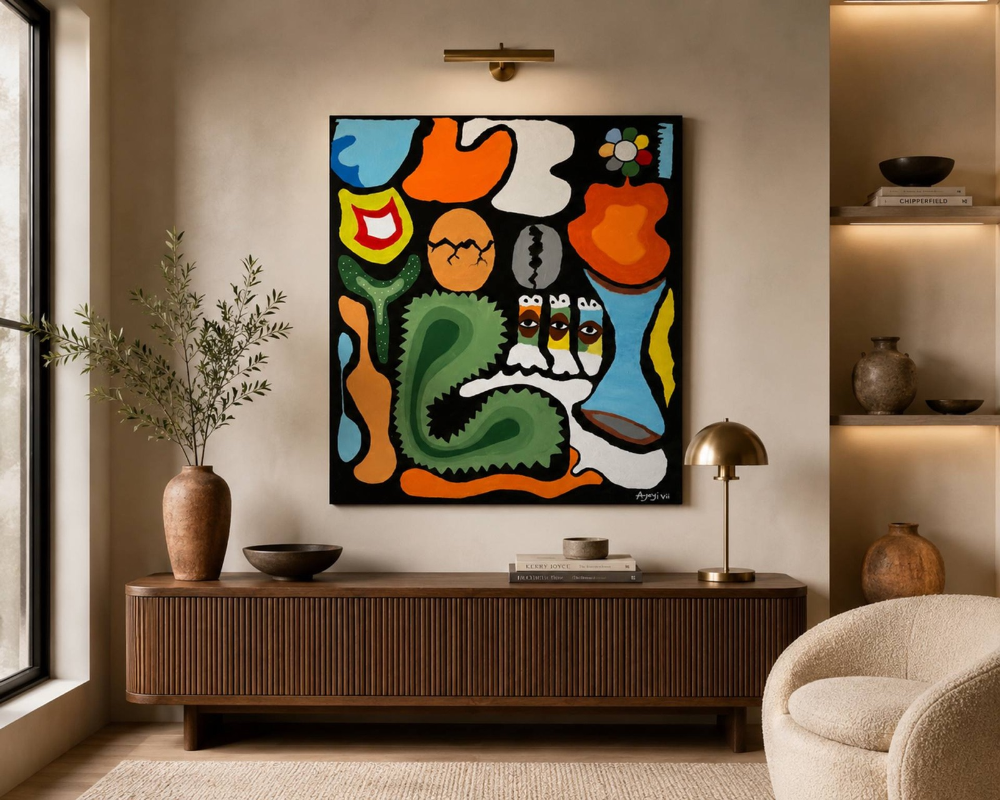

Signed lower right, "Ajayi vii" — Elijah Snoz's studio signature.
Medium
Acrylic on canvasUnframed · not ready to hang
Dimensions
36 × 48 × 2 in91.4 × 121.9 × 5.1 cm
Year
2025Single panel · one-of-a-kind
Subject & Style
Abstract, SymbolismCategory: Painting
Status
For sale · Qty 1$9,000 USD
Shipping
Rolled in a tube≈8.99 lb (4.1 kg) · ships from Abuja, Nigeria
About "Rebirth" (Atunbi)
Rebirth, called Atunbi in Yoruba, explores transformation through symbolic forms. The cracked egg represents the moment of new beginnings, while the cowries speak to heritage, abundance, and enduring value. The three eyes symbolise enlightenment, an awakening of vision beyond the physical. Painted with acrylic on canvas, the work celebrates growth, renewal, and the quiet power of becoming.
The painting continues the visual language Elijah Snoz has developed as Ajayi VII — bold, flat colour, black outlines and stacked symbolic motifs drawn from Yoruba cosmology and everyday Nigerian life. It sits within his broader Planet-B body of work, most recently shown at the Nike Art Gallery, Abuja, and is currently housed there ahead of collection.
The Cracked Egg
An egg splitting open — the exact moment of new beginnings, when what was closed becomes possible.
The Cowries
Cowrie shells nod to West African heritage, abundance and enduring value — currency, memory and inheritance.
The Three Eyes
Three watching eyes symbolise enlightenment: an awakening of vision that reaches beyond the physical world.
Read the full story behind "Rebirth" on the blog →


Own "Rebirth"
This is the only original of this painting — not a print. Buy it directly through Saatchi Art, or reach out to Elijah for a direct studio sale.
Enquire to Collect This Piece
Ask about availability, shipping to your country, or arrange to view "Rebirth" in person at the Nike Art Gallery, Abuja.
Rebirth (Atunbi) — Frequently Asked Questions
What does "Atunbi" mean in Yoruba?
Atunbi is the Yoruba word for "reborn" or "rebirth." Elijah Snoz (Ajayi VII) gave the painting this dual title to root its theme of transformation in his Nigerian heritage.
What do the symbols in the painting mean?
The cracked egg represents new beginnings. The cowrie shells speak to heritage, abundance and enduring value. The three eyes symbolise enlightenment — vision that reaches beyond the physical.
Is this an original, one-of-a-kind painting?
Yes. "Rebirth" is a one-of-a-kind acrylic-on-canvas work, painted in 2025 and signed "Ajayi vii." No prints or editions exist — only the original canvas.
How do I buy this piece of African art?
"Rebirth" is priced at $9,000. Buy it via the artist's Saatchi Art listing, or enquire directly using the form above or at elijahsnoz@gmail.com.